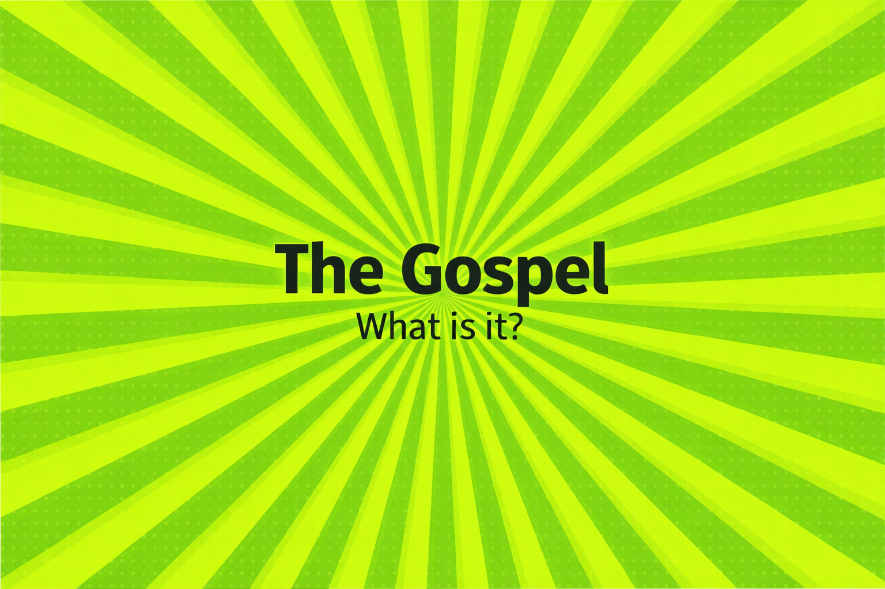

Gospel
The Gospel means good news, but in order to understand this good news, we speak of, we must first come to know the bad news that currently is. The bad news that is: You're as bad as bad can be. Period. You may not know it, there's no way of you fixing it, no reason to deny it, and only one eternal outcome because of it - Hell. The Good News: There is a good God who became a good man in order to empathize with the weakness of bad men, to die in a bad man's way, to go to hell and suffer a bad man's penalty, and to be rasied to life, to bring new life, eternal life to bad men who believe that He has indeed done it. True faith in all this will transform the bad man into the image of the good man, which obviously was a part of the good God's plan all along. Do you believe it?